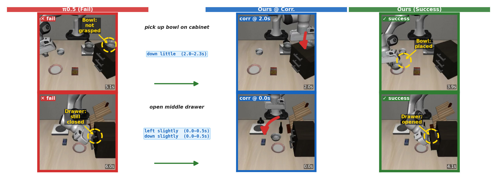
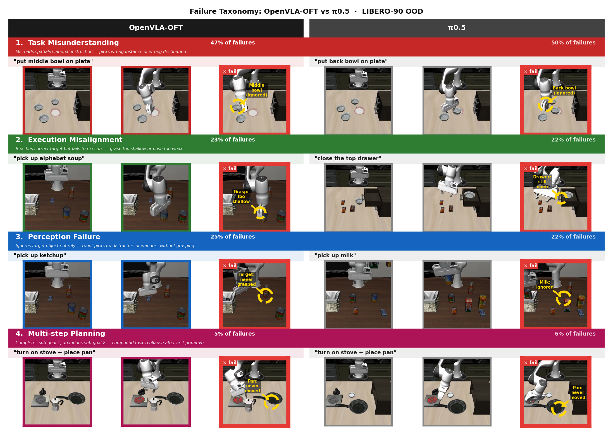
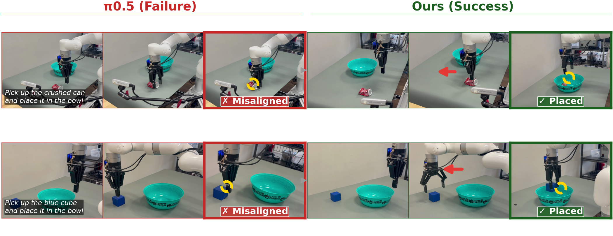

Vision-Language-Action (VLA) models demonstrate strong semantic understanding yet exhibit systematic failures during deployment. The conditions under which these failures occur, and whether they can be corrected without retraining, remain poorly understood. In this paper, we take steps toward addressing this gap. We present CorrectVLA, a framework that translates task-level natural language corrections into additive action magnitude adjustments without modifying policy weights. A human provides a single task-level correction, applied uniformly across all rollouts without per-episode intervention.
In simulation, CorrectVLA recovers execution misalignment failures across both in-distribution and out-of-distribution tasks. In real-robot experiments on a UFactory xArm7 under environment shift, CorrectVLA achieves 95% success where the base policy drops to 10%, generalizing across object locations and identities. Through a taxonomy of failure modes on LIBERO-90, we find that execution misalignment failures, where the policy reaches the correct target but miscalibrates action magnitudes, represent the correctable subset, while other failure modes where semantic comprehension itself breaks down are not amenable to this approach. The approach succeeds when policies possess strategic correctness and fails when fundamental comprehension is absent, establishing a practical operational boundary for inference-time correction.
CorrectVLA constructs corrections through three phases: extracting structured parameters from natural language (Phase A), mapping linguistic terms to numeric magnitudes (Phase B), and distributing corrections temporally (Phase C). Feedback is provided once at the task level and reused across all rollouts without per-episode intervention.

Correction Examples. π0.5 failures (left, red) are recovered by sparse task-level corrections (center, blue), producing successful execution (right, green).
An LLM extracts four structured parameters from natural language feedback: action dimension (x/y/z/roll/pitch/yaw/gripper), direction (±1), magnitude term, and temporal window [tstart, tend].
Linguistic magnitude terms map to numeric ranges: slightly → [0.3, 0.5], more → [0.5, 0.8], much → [0.8, 1.0]. The LLM selects a value within the appropriate range.
A piecewise-linear envelope φ(t) distributes the correction smoothly across the specified window, ramping from 0 to peak at midpoint then back to 0.
Analyzing 133 task-model evaluations (73 OpenVLA-OFT, 60 π0.5) across LIBERO-90 out-of-distribution tasks reveals four consistent failure modes:
~50%
Task Misunderstanding
Policy misreads spatial or relational language and manipulates the wrong object.
~22%
Execution Misalignment
Reaches correct target but miscalibrates action magnitude — grasp too shallow, push too weak.
~22%
Perception Failure
Target object is ignored entirely; the robot wanders without engaging the correct object.
~6%
Multi-step Planning
First sub-goal succeeds but the second is abandoned; compound task execution collapses.

Failure Taxonomy of Generalist VLA Policies. Four failure modes across 133 OOD tasks on LIBERO-90, shown side by side for OpenVLA-OFT and π0.5.
We evaluate on LIBERO (MuJoCo, Franka Panda 7-DoF) using π0.5 fine-tuned from DROID. We run 50 trials per task on 40 in-distribution tasks (2,000 rollouts) and 5 trials per task on all 90 LIBERO-90 tasks (450 rollouts) for out-of-distribution evaluation. CorrectVLA is applied only to tasks exhibiting execution misalignment failures.
| Setting | Metric | π0.5 | VLM Baseline | Ours |
|---|---|---|---|---|
| In-Distribution | Success rate | 1861/2000 (93.0%) | — | 1926/2000 (96.3%) |
| Recovery rate | 0% | 0% | 65/139 (46.8%) | |
| Out-of-Distribution | Success rate | 122/450 (27.1%) | — | 155/450 (34.4%) |
| Recovery rate | 0% | 0% | 33/328 (10.1%) |
In-Distribution: π0.5 achieves 93.0% success, leaving 139 failures. CorrectVLA recovers 65 of these (46.8% recovery rate), raising overall success to 96.3%. The VLM baseline (GPT-5 mini autonomously generating corrections) recovers nothing.
Out-of-Distribution: On LIBERO-90, π0.5 achieves 27.1% success (328 failures). CorrectVLA recovers 33 execution misalignment failures (10.1% recovery rate), raising success to 34.4%. The VLM baseline again recovers nothing.
Before/after video comparisons showing base policy failures recovered by CorrectVLA. Left: base policy failure. Right: CorrectVLA success with a single task-level correction.
Pick up the black bowl on the wooden cabinet and place it on the plate
π0.5 (Failure)
CorrectVLA (Success)
Open the middle drawer of the cabinet
π0.5 (Failure)
CorrectVLA (Success)
Put the wine bottle on the rack
π0.5 (Failure)
CorrectVLA (Success)
Put the bowl on top of the cabinet
π0.5 (Failure)
CorrectVLA (Success)
Put the yellow and white mug in the microwave and close it
π0.5 (Failure)
CorrectVLA (Success)
Open the top drawer of the cabinet
π0.5 (Failure)
CorrectVLA (Success)
Put the black bowl in the top drawer of the cabinet
π0.5 (Failure)
CorrectVLA (Success)
After relocating the robot base, π0.5 consistently fails pick-and-place tasks due to execution misalignment. CorrectVLA recovers success using a single task-level correction, generalizing across object positions and identities on a UFactory xArm7.
Pick and place (same location)
π0.5 (Failure)
CorrectVLA (Success)
Pick and place (different location)
π0.5 (Failure)
CorrectVLA (Success)
Pick and place (different object + location)
π0.5 (Failure)
CorrectVLA (Success)
We evaluate pick-and-place tasks on a UFactory xArm7 with Robotiq 2F-140 gripper and three RealSense cameras. After relocating the robot base, π0.5 drops from 95% success (19/20) to 10% (2/20). CorrectVLA recovers performance across all three generalization conditions using a single task-level correction.
| Condition | π0.5 | VLM Baseline | Ours |
|---|---|---|---|
| Same location | 1/10 (10%) | — | 10/10 (100%) |
| Different location | 0/5 (0%) | — | 5/5 (100%) |
| Different object + location | 1/5 (20%) | — | 4/5 (80%) |
| Total | 2/20 (10%) | — | 19/20 (95%) |

Real-Robot Results. After shifting the robot base, π0.5 fails on both pick-and-place tasks due to execution misalignment (left, red). CorrectVLA recovers success on both tasks using a single task-level correction (right, green).
A small number of targeted action adjustments at critical trajectory moments are sufficient to convert failure into success. After calibrating just a few timesteps, the VLA generates significantly different subsequent actions, enabling task completion without continuous human intervention.
The policy's high-level structure — approach, grasp, transport — remains intact; only the magnitude at the critical bottleneck requires adjustment. This supports a compositional view of VLA execution: correcting one does not disrupt the other.
Task-level corrections transfer reliably across episodes. A single task-level correction restores success across same-location, different-location, and different-object conditions, confirming that execution misalignment under environment shift is addressable without per-episode intervention.
The approach succeeds when policies possess strategic correctness and fails when fundamental comprehension is absent. Task Misunderstanding (~50%) and Perception Failure (~22%) together account for over 70% of failures — these require training-level interventions. Only Execution Misalignment (~22%) is amenable to correction, establishing a practical boundary.